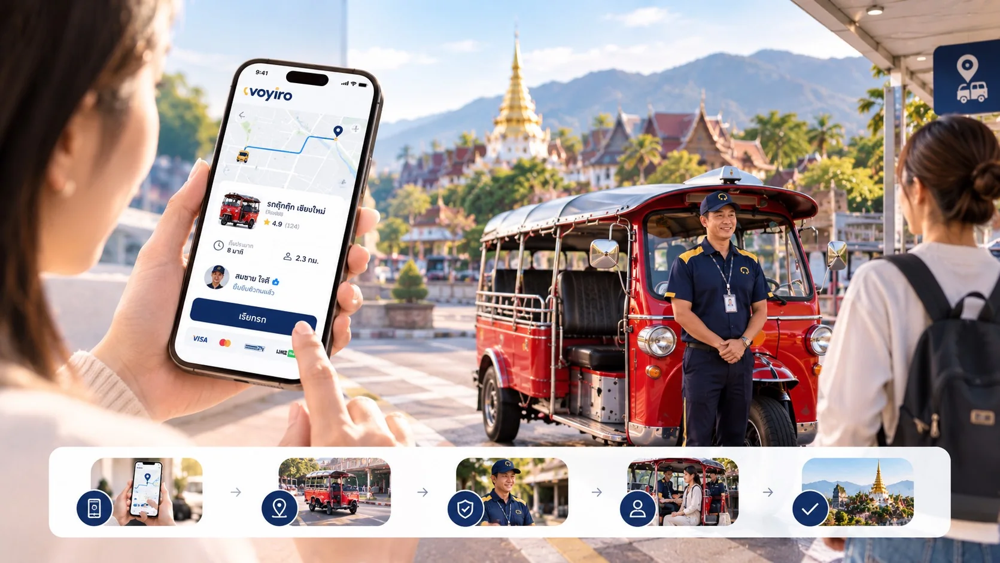

เที่ยวทั้งเมืองด้วยรถท้องถิ่น ที่ไว้ใจได้
คนขับทุกคนเป็นคนขับรถสาธารณะที่มีใบอนุญาต รถจดทะเบียนถูกต้อง และเห็นราคาชัดก่อนขึ้น ไม่ต้องต่อรอง
เลือกช่องทางที่สะดวกที่สุด
LINE
เรียกรถจากแชท LINE เลือกจุดรับ–จุดส่ง แล้วดูราคาและรายละเอียดคนขับในแชท
แอป voyiro
ค้นหาเส้นทาง ดูตำแหน่งรถแบบเรียลไทม์ จองล่วงหน้า และเก็บประวัติการเดินทาง
ทั้งสองช่องทางเปิดใช้ในโครงการนำร่องเชียงใหม่ พ.ศ. 2569
ใส่จุดรับและจุดส่ง
เลือกจุดรับ–จุดส่งจากแผนที่ หรือใช้ตำแหน่งปัจจุบัน
เลือกประเภทรถ
เห็นราคา เวลาที่รถจะมาถึง และจำนวนที่นั่ง
ยืนยันและรอรถ
ระบบส่งงานให้คนขับที่อยู่ใกล้ที่สุด แล้วแจ้งเวลาที่รถจะมาถึง
ตรวจสอบคนขับก่อนขึ้น
ดูชื่อคนขับ รหัสคนขับ และทะเบียนรถ ให้ตรงกับในหน้าจอ

ราคาเห็นก่อนเรียก ใกล้เคียงแอปเรียกรถทั่วไป
ราคาต่อคัน ไม่คิดตามจำนวนคน ราคาที่แสดงในหน้ายืนยันคือราคาที่จ่าย
| ประเภทรถ | ในเมือง เที่ยวเดียว | สนามบิน ↔ ในเมือง | เหมารถรายชั่วโมง |
|---|---|---|---|
| สามล้อ 1–3 คน | เริ่ม 80 บาท | เริ่ม 100 บาท | เริ่ม 220 บาท/ชม. |
| รถแดง นั่งตามเส้นทาง ต่อคน | เริ่มต้น 30 บาทต่อคนต่อจุด · รถออกเมื่อผู้โดยสารครบคัน · วิ่งตามเส้นทางที่สหกรณ์กำหนด | ||
| รถแดง เหมาคัน 1–10 ที่นั่ง | เหมาครึ่งวัน 08:00–12:00 1,750 บาท · เต็มวัน 08:00–17:00 3,500 บาท · เที่ยวภายในวงแหวนรอบ 2 · จองล่วงหน้า 24 ชม. ชำระเงินสดกับคนขับ · ให้บริการโดยสหกรณ์นครลานนาเดินรถ จำกัด | ||
| แท็กซี่ · รถตู้ | เร็วๆ นี้ | ||
| สองแถวประจำทาง | ค่าโดยสารต่อคนตามประกาศของจังหวัดและสหกรณ์ จ่ายเงินสดกับคนขับ voyiro ช่วยจองที่นั่งและบอกว่ารถถึงไหนแล้ว ไม่เก็บเพิ่ม | ||
ราคาเริ่มต้นโดยประมาณ ณ ตุลาคม 2569 ใช้ประกอบการตัดสินใจเท่านั้น ราคาจริงขึ้นกับระยะทาง เวลาที่ใช้ และช่วงเวลา และอาจเปลี่ยนแปลงได้ ราคาที่ผูกพันคือราคาที่แสดงในหน้ายืนยันก่อนเรียกรถ · ไม่รวมค่าเข้าชม ค่าจอด และทางด่วน · เรียกผ่านโรงแรมหรือร้านพาร์ตเนอร์อาจมีค่าบริการ แสดงแยกบรรทัดก่อนยืนยัน
ราคาขยับตามคนเรียกและคนขับที่ว่าง เพื่อให้มีรถรับเร็วที่สุด
กลางคืน
ราคาอาจสูงขึ้น เพื่อให้มีคนขับออกมาวิ่งดึก
ชั่วโมงเร่งด่วน
ราคาอาจสูงขึ้นช่วงรถติดและคนเรียกเยอะ
ช่วงสบาย
ราคาอาจลดลงให้อัตโนมัติ
ช่วงคนเรียกมาก
ระบบแสดงราคาและเหตุผลก่อนยืนยันทุกครั้ง
ราคาล็อกเมื่อยืนยัน ไม่เปลี่ยนระหว่างทาง · ไม่ใช้กับสองแถวประจำทาง
เที่ยวกับคนขับท้องถิ่น เลือกได้ 2 แบบ
คนขับสังกัดสหกรณ์ รับถึงที่พัก รอทุกจุด ราคาต่อคันไม่คิดตามจำนวนคน
เหมารถ + เส้นทางแนะนำ
- คิดตามชั่วโมงที่ใช้ เห็นราคาก่อนยืนยัน
- เลือกจุดแวะเองระหว่างทาง
- จองในแอปหรือ LINE
แพ็กเกจทริป โปรแกรมชัดเจน
- โปรแกรม เวลา และราคาต่อคันดูได้ในหน้าทริป
- ยกเลิกฟรีก่อนคนขับรับงาน
- รับถึงที่พัก
- จ่ายเงินสดกับคนขับ
คนขับไม่ทำหน้าที่มัคคุเทศก์
จ่ายแบบที่คุณสะดวก
ทุกเที่ยวมีใบเสร็จอิเล็กทรอนิกส์ ใช้แจ้งปัญหาหรือของหายได้จากใบเสร็จ
| วิธีชำระ | รายละเอียด |
|---|---|
| เงินสด | จ่ายคนขับตามราคาที่แสดงก่อนเดินทาง |
| e-Wallet | จ่ายผ่านกระเป๋าเงินอิเล็กทรอนิกส์ในระบบ |
| PromptPay / QR | สแกนจ่ายผ่านแอปธนาคาร · แพ็กเกจทริปจ่ายเงินสดกับคนขับ |
ปลอดภัยตั้งแต่ขึ้นจนถึงปลายทาง
ติดตามรถแบบเรียลไทม์
เห็นตำแหน่งรถบนแผนที่ตลอดการเดินทาง
แชร์การเดินทาง
ส่งลิงก์ให้ครอบครัวหรือโรงแรมติดตามได้
ปุ่มฉุกเฉิน SOS
กดแจ้งเหตุฉุกเฉินได้ระหว่างเดินทาง
ให้คะแนนและแจ้งปัญหา
ให้คะแนนทุกเที่ยว ร้องเรียนผ่านสหกรณ์และ voyiro ได้จากใบเสร็จ
คำถามจากผู้โดยสาร
เรียกรถได้ทางไหนบ้าง
เรียกผ่านแชท LINE หรือแอป voyiro ในโครงการนำร่องเชียงใหม่ พ.ศ. 2569
ราคาแพงกว่าแอปเรียกรถอื่นไหม
ใกล้เคียงกัน ราคาแสดงก่อนเรียกทุกครั้งและล็อกเมื่อยืนยัน ไม่ต้องต่อราคา
ทำไมบางช่วงราคาสูงขึ้น
กลางคืน ชั่วโมงเร่งด่วน หรือช่วงที่คนเรียกมากกว่ารถที่ว่าง ราคาขยับขึ้นเพื่อให้มีคนขับออกมารับ ระบบแสดงราคาและเหตุผลก่อนยืนยันทุกครั้ง ช่วงรถว่างราคาอาจลดลง
เรียกผ่านโรงแรมแล้วต้องจ่ายเพิ่มไหม
อาจมีค่าบริการเรียกผ่านโรงแรม ระบบแสดงแยกบรรทัดให้เห็นก่อนยืนยันทุกครั้ง
สองแถวประจำทางจองผ่าน voyiro ได้ไหม
ได้ในสายที่สหกรณ์เปิดให้จอง ค่าโดยสารตามประกาศ จ่ายเงินสดกับคนขับ voyiro ไม่เก็บเพิ่ม
รู้ได้อย่างไรว่าคนขับถูกกฎหมาย
คนขับทุกคนมีใบขับขี่สาธารณะ รถจดทะเบียนถูกต้อง และสหกรณ์เป็นผู้รับรองสมาชิก หน้าจอแสดงชื่อคนขับ รหัสคนขับ และทะเบียนรถก่อนขึ้นรถ ดูรายละเอียดได้ที่ ความปลอดภัยและกฎหมาย
ลืมของไว้บนรถทำอย่างไร
แจ้งของหายจากใบเสร็จการเดินทาง ระบบจะติดต่อคนขับและสหกรณ์ต้นสังกัดให้
รองรับภาษาอะไรบ้าง
ไทยและอังกฤษ
ข้อมูลส่วนตัวของผู้โดยสารดูแลอย่างไร
ดูแลตามมาตรฐาน PDPA และใช้เท่าที่จำเป็นต่อการให้บริการ